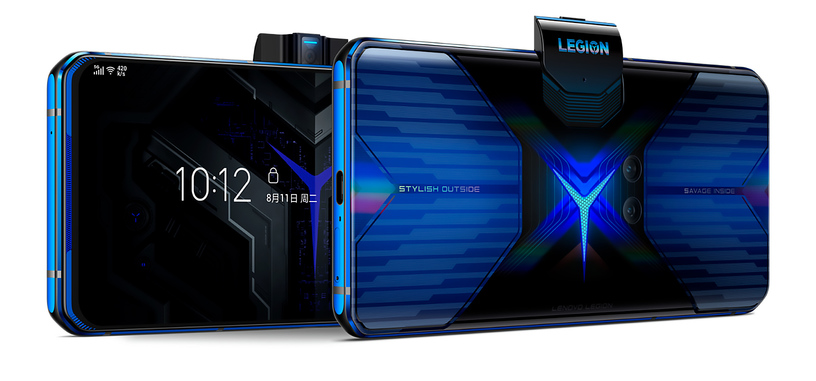

INFORMACIÓN HISTORICA

El primer celular gamer fue el Nubia play 5g.
Fue lanzado el 21 de abril de 2020.
Este celular fue creado por la empresa ZTE(china)
Es un smartphone para gamers que permiten correr juegos muy pesados de forma rapida.
tiene panel de 144 Hz, conectividad 5G y batería gigantesca.
8GB / 128GB por 2,699 CNY (380 dólares al cambio)
https://laverdadnoticias.com/tecnologia/Nubia-Play-el-primer-celular-gamer-de-gama-media-20200422-0212.html